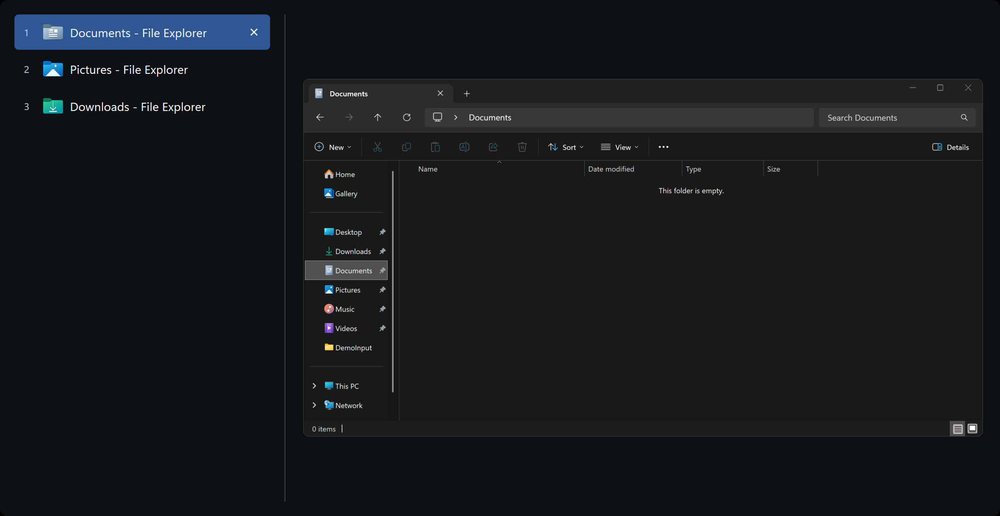

Stop tabbing past the window you want.
AltTabio replaces Alt+Tab on Windows and Cmd+Tab on the Mac with a numbered list of your windows. Press a number and you're there.
Free and open source.
Three keys, and you're there.
- Hold Alt.Or Cmd on a Mac. The shortcut you already use.
- Tap Tab.Your open windows appear in a list, each with a number.
- Press the number.That window comes to the front. No stepping past the others.

On Windows
A numbered list beside a large live preview. Type a few letters and the list narrows; F4 closes a window and F8 ends one that stopped responding.
AltTabio for WindowsOn a Mac
Cmd+Tab keeps its row of apps and lists the selected app's windows below it, including minimized ones and windows on other desktops.
AltTabio for MacIt asks for nothing else.
- Free
- MIT license. No trial, no ads, no account.
- Private
- No analytics. The Windows app never goes online; the Mac app checks GitHub for updates once a day, and you can turn that off.
- Small
- Under 1 MB. A native app that waits for the shortcut and does nothing else.
- Easy to leave
- Quit it and the system switcher is back.
Up and running in a minute.
Download, unzip, run
- Unzip it into a folder you'll keep. If you turn on start with Windows, pick one only administrators can change, such as Program Files.
- Open
AltTabio.exe, click Yes on the Windows prompt, and press Alt+Tab.
Paste one line into Terminal
curl -fsSL https://vibeslop.github.io/AltTabio/install.sh | sh
- The script checks the download's signature, puts AltTabio in Applications, and opens it.
- Allow Accessibility when it asks. Screen Recording is only for previews.
Questions
Price, privacy, permissions, and how to leave.
Is AltTabio really free?
Yes. AltTabio is open-source software under the MIT license. There is no trial, no ads, no account, and no paid version.
Does it collect any data?
No. The app has no analytics. The only time it goes online is the Mac app's daily look for updates on GitHub, which you can turn off. The source code is public, so anyone can check.
Will it slow my computer down?
No. It is a small native program written in Rust. It waits for the shortcut and does nothing else in the background.
Why does Windows ask for administrator permission?
AltTabio needs it to see Alt+Tab before Windows does and to close a frozen program when you ask. Those are the only reasons.
Why does the Mac version ask for Accessibility and Screen Recording?
Accessibility lets AltTabio see Cmd+Tab before macOS does and raise, minimize, or close windows. Screen Recording is only for window previews, and AltTabio asks for it after your first Cmd+Tab. Without it the list still works.
Why install on a Mac with a Terminal command?
AltTabio is not notarized by Apple, which takes a paid developer account, so macOS blocks a copy downloaded in a browser. The install script downloads with curl, checks the signature, and puts the app in Applications. Every release is signed with the same certificate, so your permissions carry over to updates.
You can also download the zip and allow it by hand.
How do I get the built-in switcher back?
On Windows, right-click the AltTabio tray icon and choose Exit. On a Mac, quit AltTabio from its menu bar icon, or turn off Replace ⌘ Tab in its settings.
On Windows you can also replace only Alt+Tab or only Win+Tab.
How do I uninstall it?
On Windows, turn off start with Windows if you enabled it, exit from the tray icon, and delete the folder.
On a Mac, turn off Launch at login, quit AltTabio, delete AltTabio.app, and remove its settings and permissions. The Mac page has the commands.
Is this an Alt+Tab Terminator alternative?
Yes. AltTabio is an independent, open-source window switcher for people who want a list and a live preview on Alt+Tab. It is not affiliated with Alt+Tab Terminator.